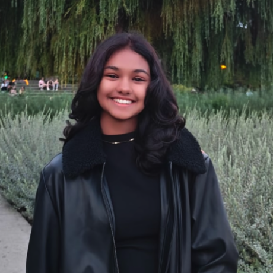
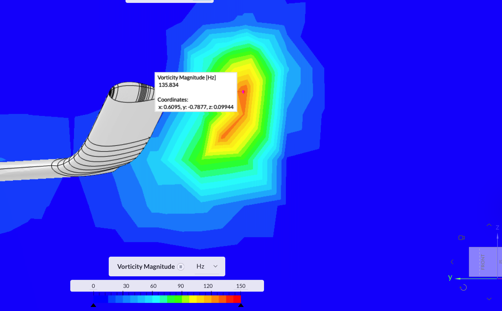
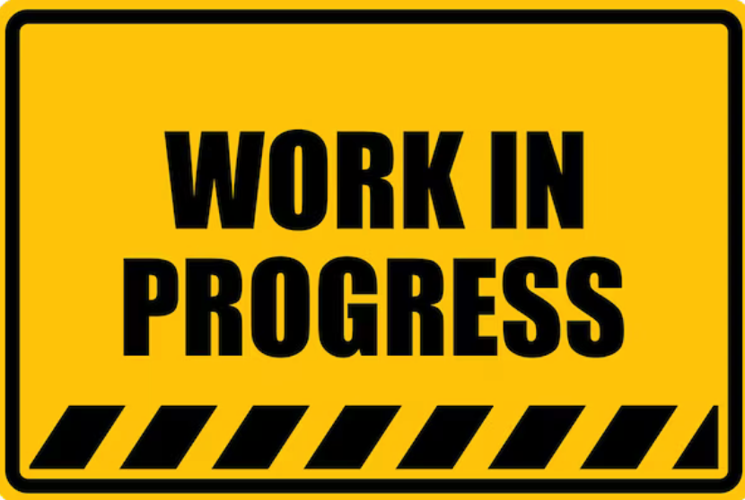
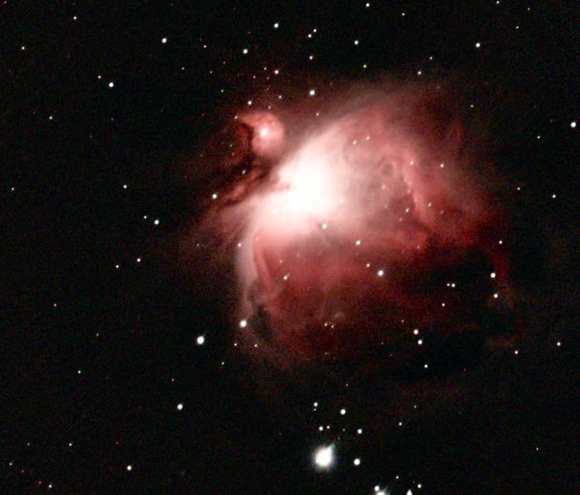
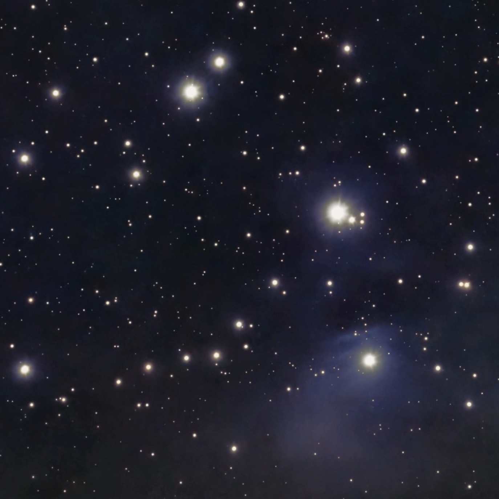
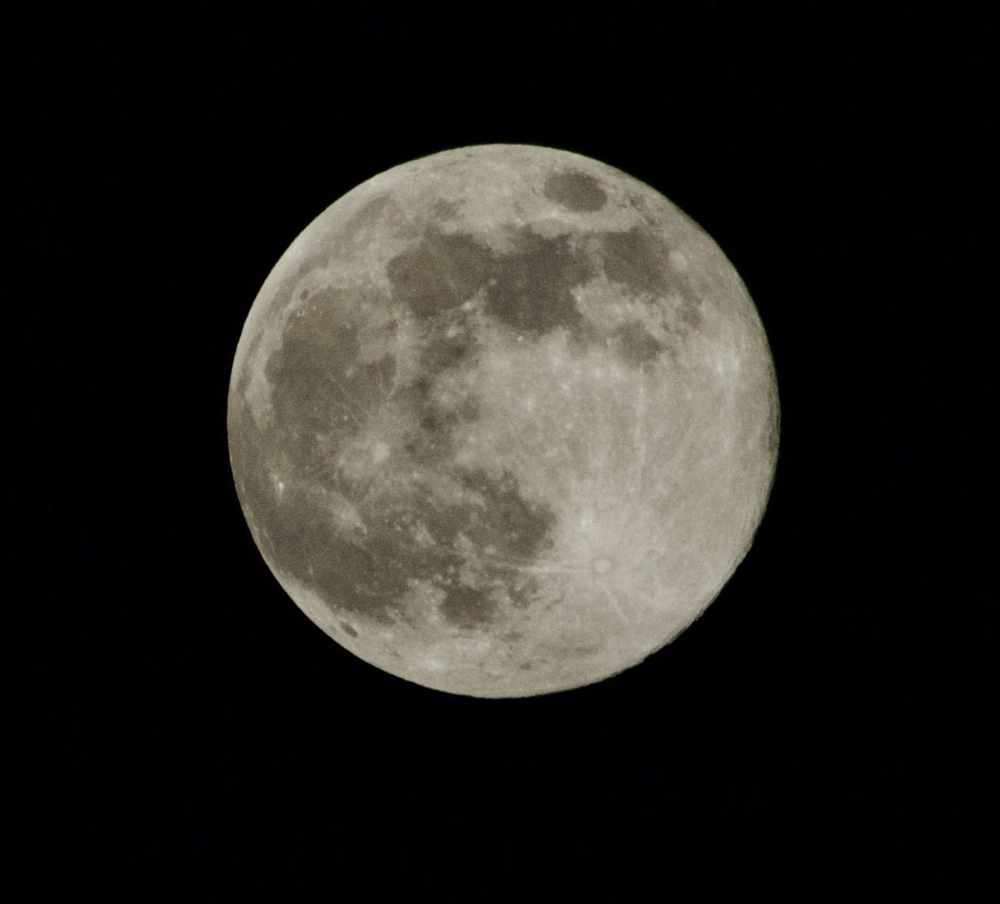
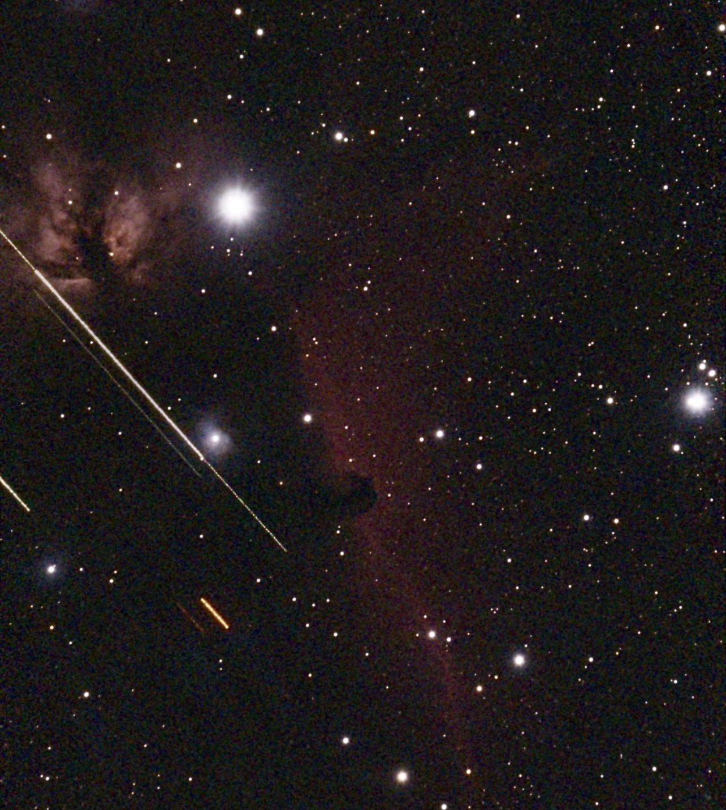

High school student interested in Astrophysics and Aerospace engineering!

I’m a high school student passionate about astrophysics, aerospace engineering, and STEM research. I enjoy building projects, and conducting independent research in areas like aerodynamics and astronomy.
This portfolio is where I share my work, interests, and the things I’m learning through research, problem-solving, and creative exploration.
This research investigates the wake vortex behavior of blended wing body aircraft configurations, with a focus on aerodynamic flow structures and their implications for stability, efficiency, and future aircraft design. The paper has been submitted to a journal for review. ( Can provide manuscript upon request :D )

This project examines the photodegradation of chlorophyll and riboflavin under ultraviolet radiation, exploring how exposure to UV light affects the stability and breakdown of organic molecules. The research connects chemistry, light interaction, and molecular behavior.

Student Pilot | 2X TEDx Speaker | Corporal at 540 Golden Hawks Air Cadets | 2X ICDC Qualifier | IB Student
Currently working toward my Private Pilot Licence at Island Air Flight School, based at Billy Bishop Toronto City Airport. Through flight training, I am developing technical aviation knowledge, situational awareness, discipline, and decision-making skills.
Serving as President of TEDxWhiteOaksSS and a two-time TEDx speaker. Responsible for leading the planning, organization, and hosting of the 2026 TEDx event at White Oaks Secondary School, while helping shape ideas, storytelling, and event execution.
Run @celestial_voyages, a science communication Instagram channel where I share astronomy facts, document my flight school journey, and create engaging educational content that makes STEM topics more accessible.
Responsible for training students in the Principles cluster by supporting preparation, strengthening presentation and competition skills, and helping members build confidence in business case analysis.
Contributing to the Electrathon team through sponsorship outreach and hands-on involvement in building the car. This role combines teamwork, problem-solving, and practical engineering experience in a competitive STEM environment.
Support member engagement, teach and mentor students, and help prepare mock trial teams and prospective participants within the club. This role has strengthened my leadership, communication, and public speaking skills.
Gained experience in aviation, leadership, and community service through Air Cadets. Participated in activities such as poppy drives and Remembrance Day parades, while also serving as a role model for younger cadets through lesson support and drill instruction.
Placed Top 20 in Role-Play 2 and Top 20 Overall, qualifying for ICDC.
Achieved Top 10 in role-play and Top 10 overall.
Recognized for youth leadership, involvement, and contribution to the community.
Received both a Certificate of Excellence and a Certificate of Distinction.
Awarded Best Presentation for delivering a strong and effective project presentation.
Placed Top 20 in Role-Play 1, Top 20 in Role-Play 2, and Top 20 Overall, qualifying for ICDC.
Graduated Grade 10 with honours in recognition of strong academic performance.
Currently pursuing the IB Diploma at White Oaks Secondary School, with a strong focus on academic rigor, research, leadership, and interdisciplinary learning.
A small collection of astrophotography images I’ve captured.




Email: Diya.shodhan@gmail.com
Instagram: @celestial_voyages